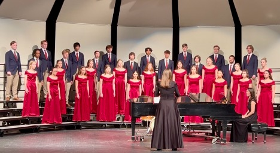
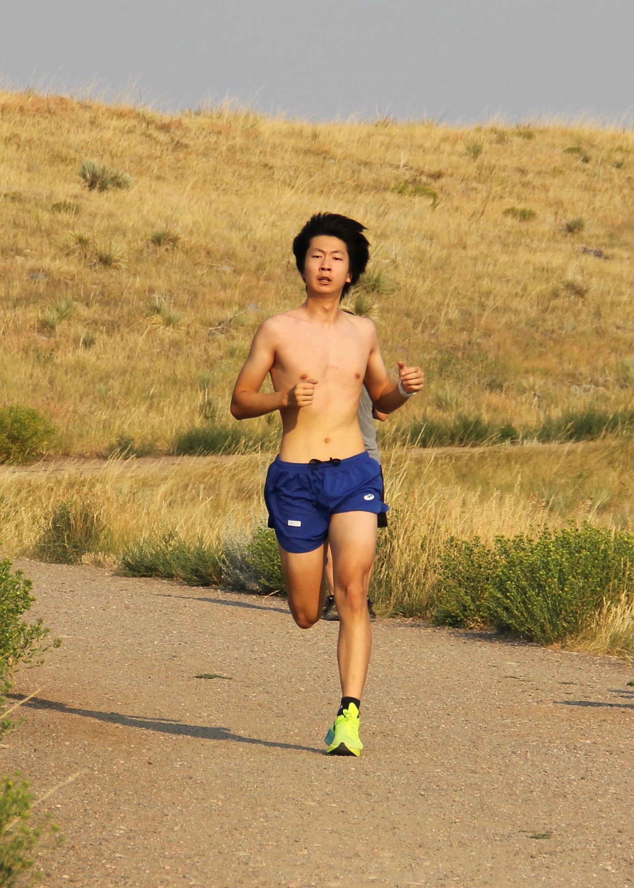
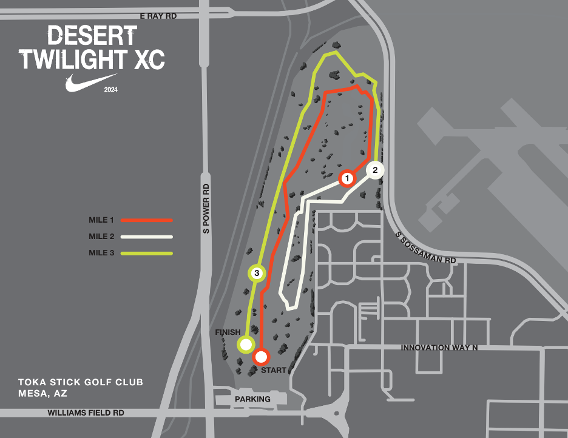
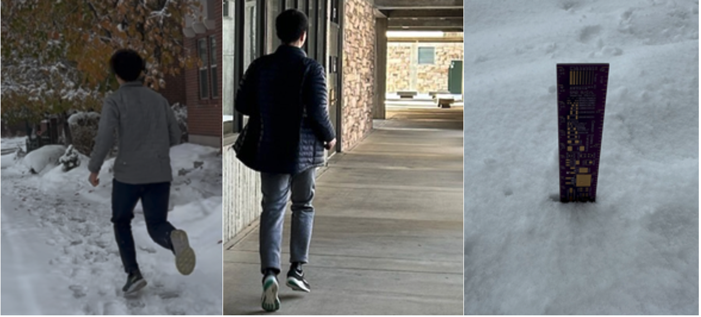
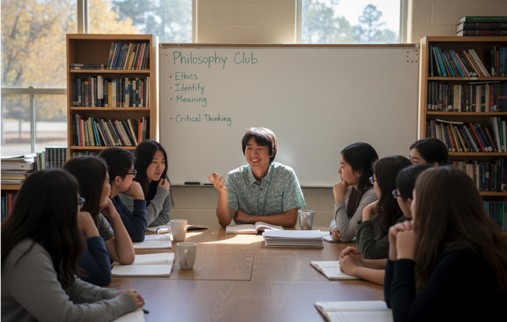
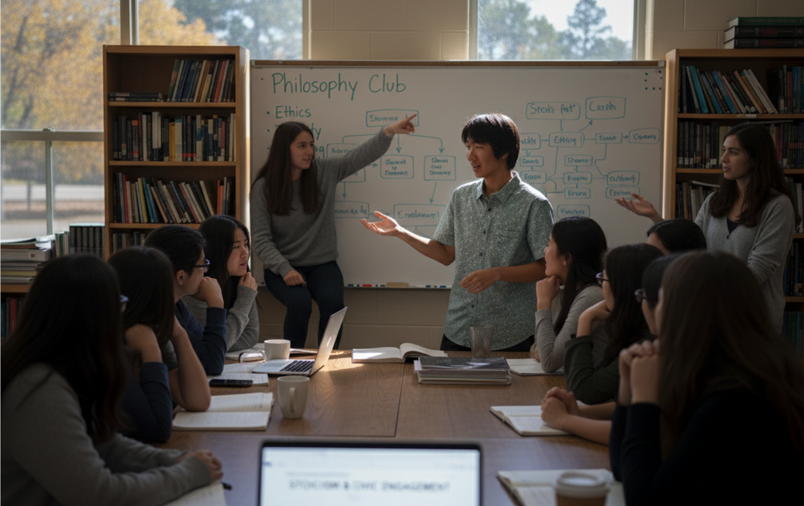
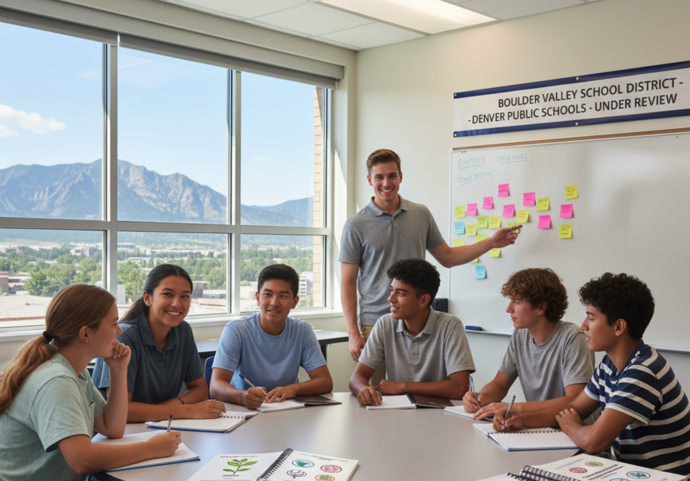
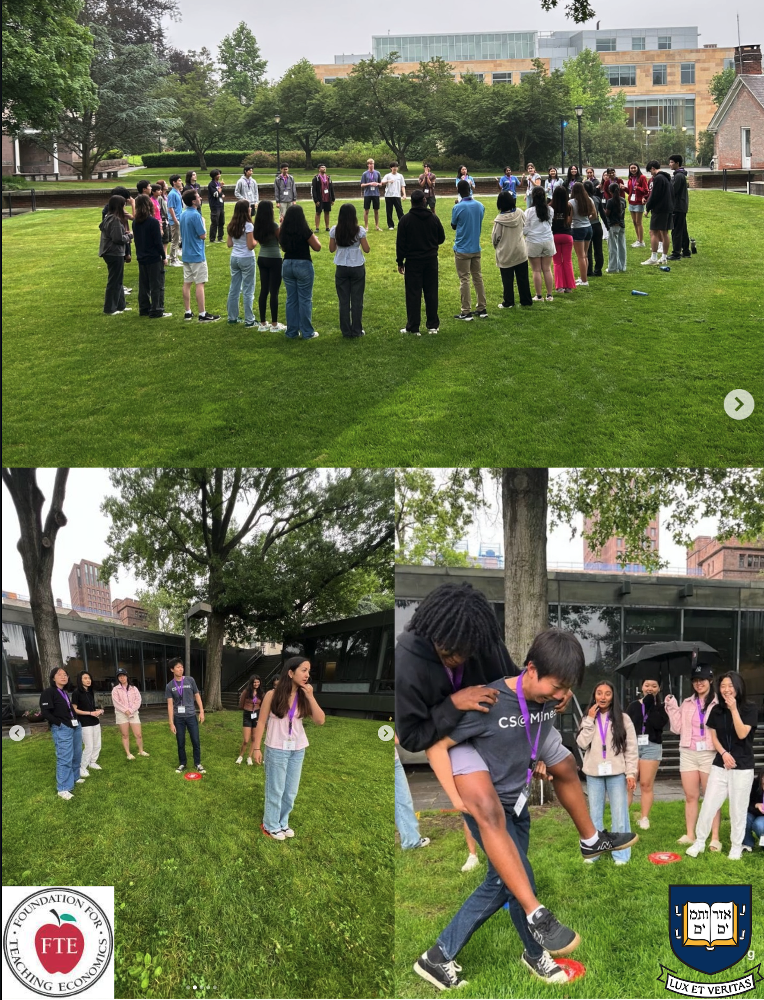

About Me
I created this space to share the projects and experiences that shape who I am becoming: a committed teammate, a thoughtful researcher, and an engaged citizen.
My interests include vocal performance with the Meistsingers, competitive cross country, science research, and philosophical thinking.
Meistsingers
Performing with the Meistersingers has taught me how teamwork and trust can transform music into something unforgettable. Below are highlights that capture the spirit of our ensemble.

Concert
Concert VideoOur Fall concert featured a captivating performance where we debuted a new arrangement blending classical and contemporary harmonies. During the program, our choir proudly gave the world premiere of *Alchemy*, a stunning piece composed by Reginal Write.
Carnegie hall
The Meistersingers performed at Carnegie Hall as part of the Masterwork Festival Chorus, collaborating with the distinguished conductor Dr. Anton Armstrong of St. Olaf College.
Cross Country
Photos
Running has taught me resilience and the importance of pacing myself through challenges as I trained daily with structured workouts and 6–8 mile runs that built both physical endurance and mental discipline.

Team Huddle
The pre-race ritual that keeps our team grounded and focused before the starting gun.


Arizona Trail
I represented the team at the Desert Twilight Invitational, a nationally recognized competition in Gilbert, AZ. The route shown is from our training camp in Arizona, where the altitude and heat pushed us to new levels.
Science Research
Paper
I am exploring how environmental data can support more resilient neighborhoods. My recent paper examines heat islands and proposes community-led monitoring strategies. View the slides.
Read the full paper. ISBS 2025.Drone Sensing
I am exploring how environmental data can support more resilient neighborhoods. My recent paper examines heat islands and proposes community-led monitoring strategies. Read the drone sensing research.
Community Map
The community map project overlays temperature data, green space access, and volunteer initiatives to recommend cooling interventions. It is an ongoing collaboration with local organizations.
Goto the community map.

ISBS 2025 Paper
ISBS 2025 Conference Oral Presentation

Community Map
Interactive prototype showcasing temperature readings and recommended cooling centers.
Philosophy Club
I founded and led the school’s Philosophy Club, growing membership from 5 to 20 over three years by organizing weekly discussions on ethics, identity, and meaning. Through inclusive leadership and engaging group conversations, I fostered a supportive community that encouraged critical thinking, collaboration, and the exploration of new perspectives.
Presentation
I created more than 40 presentation guides on a variety of topics, including my latest presentation on how Stoic philosophy can inform modern civic engagement, which sparked a lively discussion that continued long after the meeting ended.

Club Photo

Presentation
Summer Intern
During Summer 2024, I served as a Research and Development Intern with the Post Internet Project in Boulder, contributing to a semester-long health curriculum aimed at strengthening adolescent resilience, self-regulation, and motivation. I helped pilot and refine lesson materials and provided targeted feedback on curriculum design to improve clarity and classroom usability. The curriculum is now under review by Denver Public Schools and Boulder Valley School District for potential high school implementation. It is also being evaluated by a national publisher of mental health workbooks for at-risk youth.

Summer Leadership Program
During Summer 2025, I completed the Advanced Economics for Leader (EFL) program at Yale University through the Foundation for Teaching Economics’ EFL initiative, exploring concepts such as consumer optimization, the capital asset pricing model, and the quantity theory of money while developing leadership and collaborative decision‑making skills through team-based activities.
